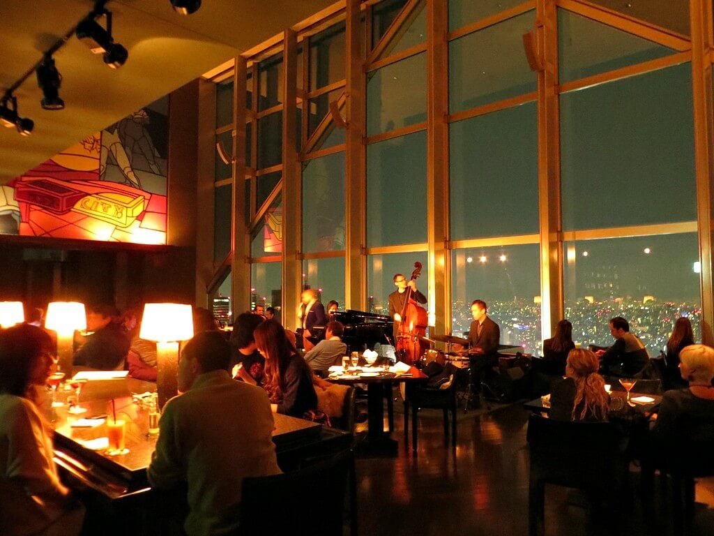
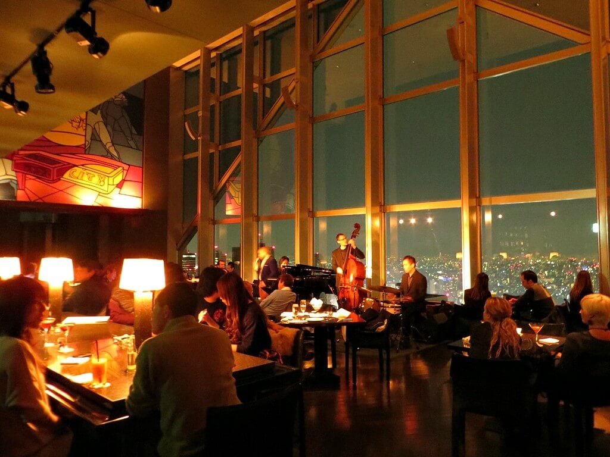
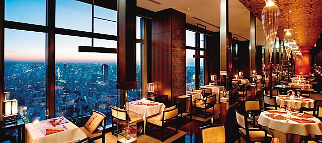
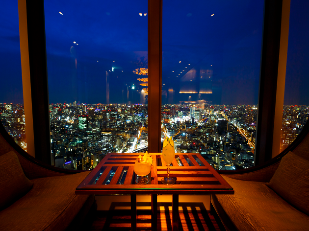
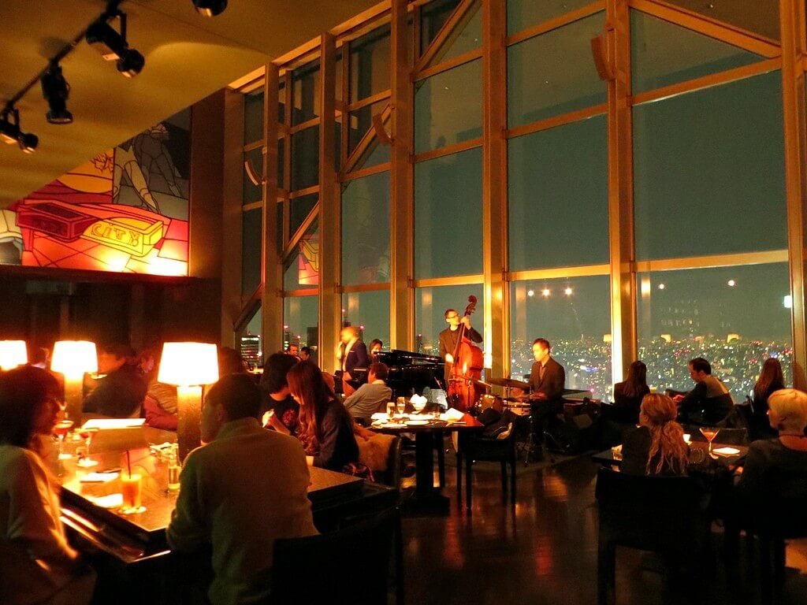
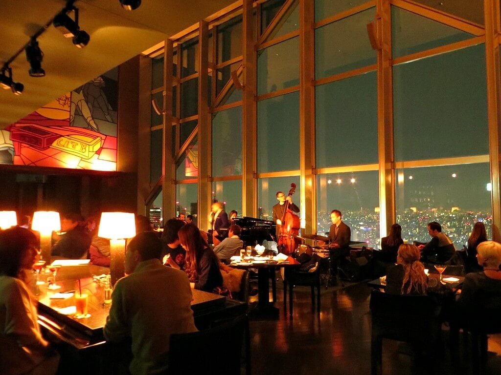

Things to Do, See and Eat
at the World's Tallest Tower
Standing tall in the heart of the city with its sleek design, TOKYO SKYTREE is
among the city's unmissable icons. With a 360° panoramic view of the bustling city, people flock to
the tower for arresting sights, but did you know that it offers more than just that? Whether you're looking for romantic ways to spend
the day or want fun and excitement for the whole family, TOKYO SKYTREE has an array of activities you can enjoy.Find out how you can make the most of
your trip to TOKYO SKYTREE with our one-day guide
Skytree Terrace Tours
AT FLOOR 155
New and exciting! Strap on a vest and put on a hard hat. Floor 155 is a newly-opened section of TOKYO SKYTREE that affords guests sweeping views of Tokyo, without the glass windows! Your guide will point out areas of interest as you gaze at the lovely view. You can also take a look at intricate structure of the tower up close. Special straps are available for phones and cameras so you won't have to worry about dropping valuables. Snap those photos away!
Tembo Deck Floor 345
Enjoy “Tokyo Cuisine”, a new Japanese cuisine inspired
by the spirit and character of Shitamachi, while surrounded by a
magnificent view 345 m up in the sky. After that in floor 350
you will enjoy drinks and the view from the highest placed
SKYTREE CAFE in Japan.
When you end up with them , we will take a break after enjoying the
Tower view at another cafe,floor 340.
Restaurants At The Skytree




Wanna know something about Skytree?
Tokyo Skytree (東京スカイツリー Tōkyō Sukaitsurī) is a broadcasting, restaurant, and observation tower in Sumida, Tokyo, Japan. It became the tallest structure in Japan in 2010 and reached its full height of 634.0 metres (2,080 ft) in March 2011, making it the tallest tower in the world, displacing the Canton Tower, and the second tallest structure in the world after the Burj Khalifa (829.8 m/2,722 ft).
The tower is the primary television and radio broadcast site for the Kantō region; the older Tokyo Tower no longer gives complete digital terrestrial television broadcasting coverage because it is surrounded by high-rise buildings. Skytree was completed on Leap Day, 29 February 2012, with the tower opening to the public on 22 May 2012. The tower is the centrepiece of a large commercial development funded by Tobu Railway and a group of six terrestrial broadcasters headed by NHK. Trains stop at the adjacent Tokyo Skytree Station and nearby Oshiage Station. The complex is 7 km (4.3 mi) north-east of Tokyo Station.
Architects Have Found A Way To Protect The Skytree Tower From Earthquakes ! Engineers Used Ancient Techniques To Protect Tokyo's Skytree From Earthquakes
Listen to the audio...